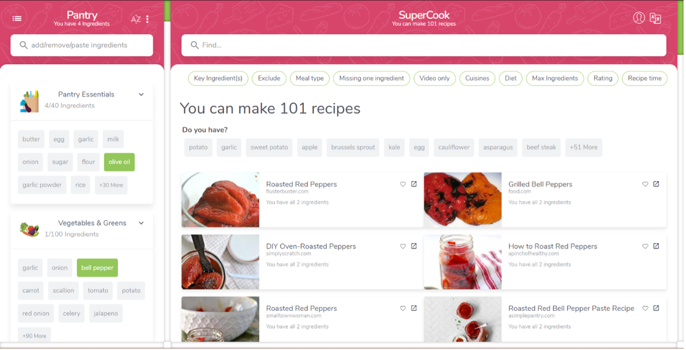
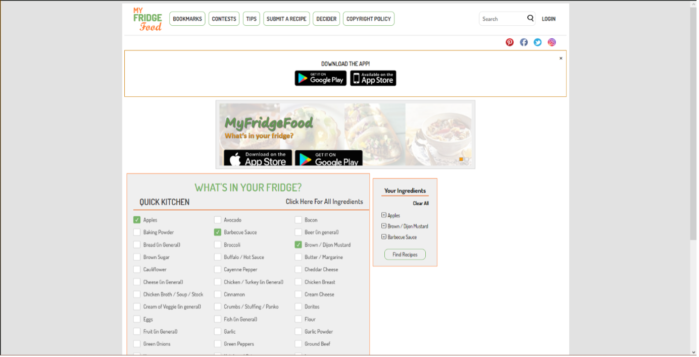
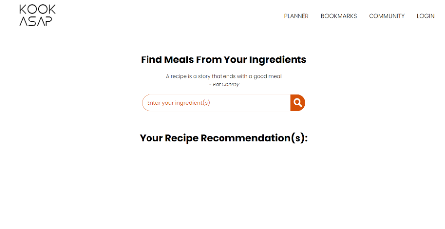
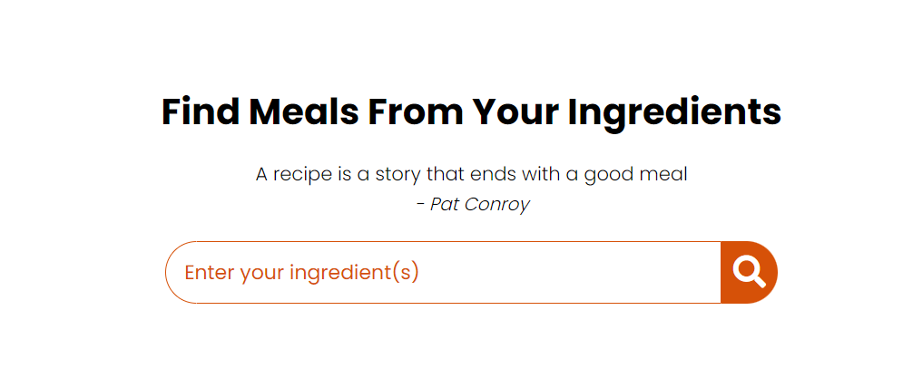
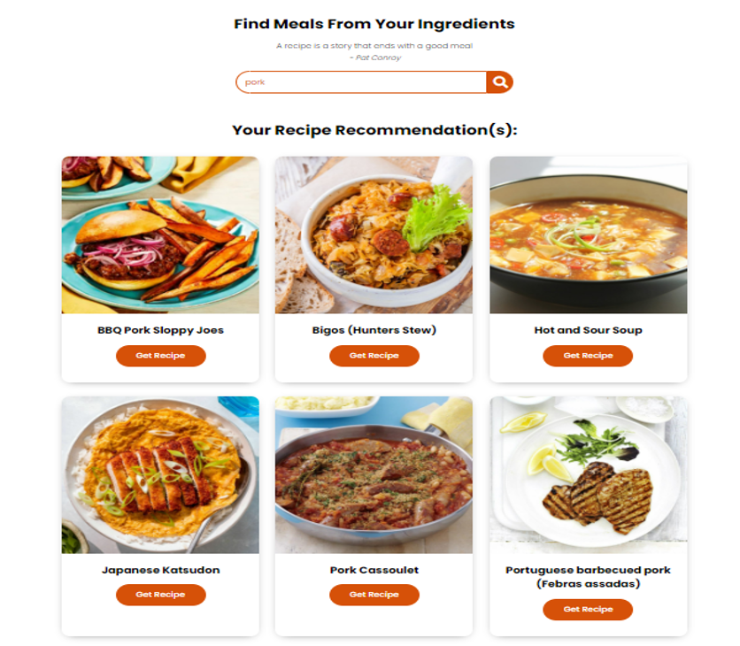
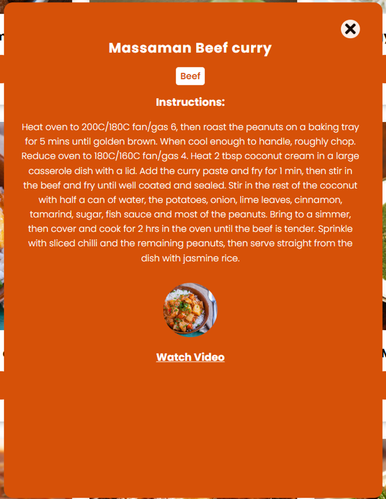
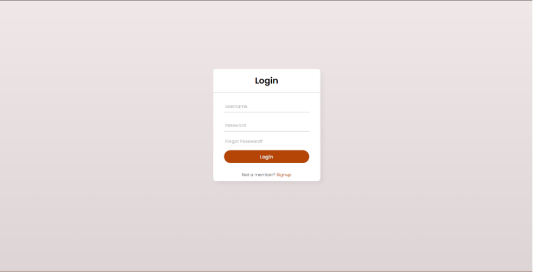
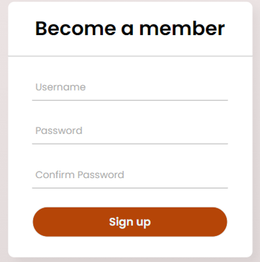

Tasks
Each member was assigned different tasks based on their skills and interests. However, we always encouraged to support each other whenever there was a problem even if it was trivial. By this way, we saved good amount of time and individual efforts so our overall performance and progress could be smooth.
Support
Members could push the progress.
Communication
The Leader talks mostly, anytime when there is a problem occurs or meetings. Members were free to raise their voice.
Some became more active due to good motivation.
Silent people will always be asked to provide responses. If they cannot, they will be asked to give their reasons.
Decision making
The leader makes decisions after hearing members’ suggestions. But sometimes, members can act on their own if they backup original copies for the leader to review and they already finish their tasks.
Tin and Quang have quite similar career plans in the data sector. Tin wants to be an AI engineer, whereas Quang would love to become a data engineer. Meanwhile, Quan’s dream job is still undefined but he would like to learn more about coding so it can be safe to assume that he wants to become a developer.
On the other hand, Vu has determined to pursue the paths of mobile developer or an OS manager.
Though our dream jobs vary, the core of these jobs is the in-depth knowledge of how operating systems work and how to translate codes into products.
The main difference among them might be the amount of coding languages required for each job, which caused trivial problems in this project that HTML/CSS is not necessary for data jobs, but it is essential for web and mobile developers.
Each members’ career plan is similar from the beginning to junior level where we all want to at least acquire basic principles at junior level. After that, our paths are totally different in terms of professions, but they are similar in job promotion that we all want to become profoundly senior engineers.
[Brief description of what we have done]: Comments on how well the audit trail (Commit history) reflect groupwork (milestones, stages, processes, contributions from each member maybe ??)
Because of Covid-19, the eating habits of many consumers across Asia have entirely changed. According to a Nielsen survey, 86 percent of Chinese chose to cook at home post-pandemic instead of eating out, in Hong Kong, the percentage was 77%, in Vietnam, Malaysia, and South Korea, it was 62%, in Thailand it was 56%, and in Taiwan it was 54%. []. Due to this change, many people have become accustomed to cooking at home. However, there are numerous factors to consider when cooking, such as ingredients, equipment, and recipes, which can be overwhelming and exhausting. Which is why our project is a food website dedicated to making cooking quick and easy called KookASAP! Our platform, also known as "Cook as soon as possible" is here to assist anyone who needs help in the kitchen. Whether you are an inexperienced cook, short on time, easily confused by recipes, looking to try new dishes, or simply unsure of what to make, KookASAP has something for you. With a range of features including a search function, recipe recommendations, step-by-step instructions, and more, we aim to provide a comprehensive and user-friendly tool to help you find and follow recipes and cook delicious meals. We offer a wide selection of recipes catering to various dietary restrictions and preferences, and our platform also includes features such as ingredient substitutes, recipe scaling, and nutritional information to make cooking even easier. Plus, with integration with meal and grocery delivery services, a social aspect for sharing experiences and connecting with other foodies, and more, KookASAP is here to make cooking enjoyable for everyone.
Our team is developing a recipe search engine that aims to provide users with the ability to convert ingredients into complete recipes. In doing so, we have identified a few competitors in the market, including Supercook and MyFridgefood.
Figure 1: https://www.supercook.com
Figure 2: https://myfridgefood.com
However, we believe that our platform offers several unique features that differentiate us from these competitors, which are:
- Missing ingredients shop location: While MyFridgeFood and Supercook allow users to search for recipes based on the ingredients they have on hand; our website takes it a step further by helping users locate and purchase any missing ingredients. This feature makes it easier for users to follow recipes and cook delicious meals, even if they don't have all of the necessary ingredients at home. Overall, our website provides a convenient and useful tool for users looking to find and purchase missing ingredients for their recipes.
- Recipe substitutions: This feature would enable users to enter an ingredient they don't have and locate substitutes for it. This may be particularly useful for people who are trying to use up ingredients they currently have on hand or for those who must make substitutions because of dietary requirements.
- Recipe scaling: This feature would allow users to adjust the serving size of a recipe up or down to accommodate their needs. This could be especially helpful for those who are cooking for a large group or for those who want to make a recipe in bulk to freeze for later.
- Recipe nutrition information: This feature would allow users to plan their meals for the week and create a shopping list based on their planned meals. This could help users save time and money by planning their meals in advance and only buying the ingredients they need.
- Meal planning calendar: This would involve integrating the website with smart home devices such as smart ovens and refrigerators. This could allow users to easily access and follow recipes while cooking and could also enable the website to suggest recipes based on the ingredients detected in the user's smart refrigerator.
- Smart home devices integration: This feature would create a space for users to connect with each other and share cooking tips, recipe ideas, and more. This could help users learn from and engage with other home cooks and could also provide a sense of community and support for those who enjoy cooking.
- Community forum: This feature would allow users to input their dietary preferences and the ingredients they have on hand and receive personalized recipe recommendations based on these inputs. This could help users discover new recipes they may not have otherwise considered and make meal planning more efficient.
- Recipe recommendations: This feature would allow users to rate and review recipes that they have tried, which could help other users find the best recipes. It could also allow users to leave comments or tips about the recipe, which could be helpful for those who are trying the recipe for the first time.
- Recipe ratings and reviews: This feature would allow users to see the nutritional information for a recipe, including the number of calories, fat, protein, and other nutrients. This could be helpful for those who are trying to maintain a healthy diet or who have specific dietary needs.
Our specific aim is to provide a comprehensive and user-friendly recipe search engine that helps users find the recipes they need and make the most of the ingredients they have on hand. With KookASAP, we believe that by offering a range of features that cater to the needs and preferences of different users, we can help make cooking easier and more enjoyable for everyone. Overall, our website aims to provide a convenient and useful tool for those looking to find and follow recipes and cook delicious meals.
In order to achieve the ultimate goal of making cooking easier and more enjoyable, it is necessary for us to focus on smaller and immediate goals:
- Implementing a search function that allows users to type in ingredients and see a list of recipe options.
- Providing a wide range of recipe options that cater to various dietary restrictions and preferences.
- Developing a user-friendly interface for searching and organizing recipes based on ingredients, dietary preferences, and other criteria.
- Implementing a recipe recommendation system that suggests new recipes to try based on a user's past cooking and ingredient preferences.
- Providing step-by-step instructions and video tutorials for each recipe to help users successfully complete the dishes they are preparing.
- Integrating with meal delivery and grocery delivery services to make it easier for users to obtain the ingredients they need for their recipes.
- Adding a social aspect to the platform, allowing users to share their cooking experiences, ask for recipe recommendations, and connect with other food enthusiasts.
- Implementing a feature that helps users locate and purchase missing ingredients for their recipes.
- Adding a feature that suggests ingredient substitutes for users who are trying to use up ingredients they have on hand or need to make substitutions due to dietary restrictions.
- Implementing a recipe scaling feature that allows users to adjust the serving size of a recipe to accommodate their needs.
- Providing nutritional information for each recipe, including calories, fat, protein, and other nutrients.
- Adding a rating and review system for recipes, allowing users to rate and review recipes they have tried and leave comments or tips for others.
- Integrating the website with smart home devices such as smart ovens and refrigerators to make it easier for users to access and follow recipes while cooking.
- Adding a meal planning calendar feature that helps users plan their meals for the week and create a shopping list based on those meals.
- Ensuring that the recipes provided are accurate and up-to-date.
- Allowing users to save their favorite recipes and create shopping lists to streamline their meal planning.
- Regularly updating the site with new recipes and features to keep the content fresh and relevant for our users.
Project scope is where we set boundaries in our project and define exactly what goals, deadlines, and project deliverables we will be working towards. It helps us remain focused and on tasks for a better outcome. [] Because of limited time and capabilities, we have narrowed down and limit our scope, but we still keep the core and essential features to be delivered in our proof of concept:
High priority
In order to make it easy for users to quickly access a specific section of our website, we placed all of the general tabs in the upper right corner. Additionally, we provide a separate logo for our website in the left corner to impress visitors and help them remember our name. We even include a search box on the homepage to make it easier for people to look for a recipe using the items they have entered.
Where user can type in ingredients as input.
Which will include the recipe, ingredients needed for the recipe, step by step instruction. We also provide social media icons and the about page.
Medium priority
Users can log in to the page if they have already created an account or sign up as a new member. But they do not need to register to access our website.
A step-by-step cooking video will be included inside each recipe page to make it easier for users to follow
Unfortunately, due to limitations on our time and resources, we are unable to deliver the following features at this time. However, we will carefully evaluate the feasibility of implementing these features in the future:
• QR (Quick Response) code generator: Will generate a QR code that leads to the recipe link, the user can copy/share this.
• Data optimization using the concept of Artificial Intelligence
• Data sorting using the concept of Artificial Intelligence
• Artificial Intelligence chat bots
• Meal planner: This feature allows users to plan their meals for the week and create a shopping list based on their planned meals.
• Recipe substitutions: This feature would enable users to enter an ingredient they do not have and locate substitutes for it
• Community forum: Provide a platform for users to connect with each other and exchange cooking-related information, such as tips and recipe ideas. By fostering a sense of community, users can learn from and engage with other home cooks, as well as find support and camaraderie with those who share a love of cooking.
• Filter tree: The user will be able to sort out the recipe’s attributes such as regional origin, size, number, cooking time, etc.
• Feedback page: The user will be able to give feedback to us
• Missing ingredients shop location: Once a person logs in, we can assign them with their consent so that we can suggest supermarkets nearby where they can get the ingredients for the recipe they want to make if they do not have the required amount. The user can sign out to cease that action and sign in again when they need to check for their stored recipes if they are unhappy with us keeping track of their online searches.
• Bookmarks: We strongly advise users to register an account since this part was created to make it easier for customers to save their favourite recipes and locate them quickly the next time they visit our website. Also, we will collect data from the database and provide some recipes suitable for the users.
• Account page: This function will allow users to manage their account. If users wish to store recipes they like or want to prepare, the functionality will also allow them to do so.
• Recipe scaling: This feature would allow users to adjust the serving size of a recipe up or down to accommodate their needs
• Recipe nutrition information: This feature would allow users to see the nutritional information for a recipe, including the number of calories, fat, protein, and other nutrients
• Recipe recommendations: This feature would allow users to input their dietary preferences and the ingredients they have on hand and receive personalized recipe recommendations based on these inputs.
• Smart home devices integration: This would involve integrating the website with smart home devices such as smart ovens and refrigerators. This could allow users to easily access and follow recipes while cooking and could also enable the website to suggest recipes based on the ingredients detected in the user's smart refrigerator.
A concrete plan is undeniably important as the starting point of any project. Hence, our team spent a week making a plan that was suitable for individual schedules and personal skills. However, we have learnt that a project's progress would never be proceeded without any mistakes no matter what scale that project might be, so we have prepared for the worst and been ready to tackle any difficulties according to our risk assessment. But then again, there had been many unexpected outcomes that took us days and nights to remediate the plan. This part will display what we have done to follow the proposal and what changes we have made for our website to work properly.
(Timetables)
In any project, the tools and technologies used can greatly impact the success and efficiency of the project. Careful selection and use of the right tools and technologies can streamline workflows, improve collaboration, and lead to higher quality results. For KookASAP, our team used the following software and tools:
- HTML for defining the structure and layout of the website.
- CSS for styling the page and controlling its layout.
- JavaScript for adding interactivity to the page, such as handling the search form submission and modifying the page content based on user actions.
- Github and Github Desktop as well as Git Bash were used for managing and modifying the workflow and project during the development process.
These tools were useful in helping to organize and streamline the development process, as they allowed the team to track changes, collaborate, and stay organized as they worked on the project.
- Photoshop version 23.5.0 was used to design the logo for the project, In order to use Photoshop, a license was required. This allowed the team to legally access and use the software for their project. The use of Photoshop allowed our team to create a high-quality logo that helped to establish the branding and visual identity of the project.
The only hardware requirement was a standard laptop or similar devices.
Regarding prior experience, all group members had experience with Github, Github Desktop and Git Bash. Tin and Quan had experience with HTML, CSS, and JavaScript. Our member, Tin, only had 1 month experience with Photoshop, so he learned it specifically for this project. Overall, our team was able to utilize our skills and knowledge to successfully complete the project.
Testing our website is the crucial step to ensure that the website has no problems before we present it to everyone. Firstly, we accessed the website and logged in with a guest account. After the login was complete, we took a try at identifying ingredients through the search engine on the homepage. When we entered the ingredients that we want to cook with the food, the recommendation showed all French cuisine recipe which includes our chosen ingredients. Unfortunately, the leader of our group recognized a bug in the bookmark extension and reported it to the team. The issue is the users are not able to save their loving recipes and it will take a long time to research them again. We maintenanced the website for a while and fixed the bug. It was not a serious problem, but we will get in trouble with our distinguished guests in the future if they cannot save their own recipes at favorite.
During the second testing time, we invited a few students in the school to be users of our website. Our purpose is to know the opinion of other users except the developers. Luckily, we received many positive comments on our project. The users told us that they could access the website immediately without any problems. They were surprised when we told them that the website was hosted on github which solves all issues of internet connection. Finally, thanks to the user's opinion, we are now extremely confident and optimistic when we introduce the project to the class.
https://geteasyqa.com/qa/test-website/
Functionality testing:
• Links testing: To ensure the link of our website is safe and access successfully, we verified the external links and internal links.
We also did the double check to confirm that links that point to the same page are not present and there aren't any faulty links.
• Forms testing: For interactive communication with our users, we employ forms.
Therefore, we checked the valid input data set, the invalid data field input values and the options for forms when it is feasible to delete or modify data in any other way.
• Cookies testing:Following a user's visit to your website, cookies, which are little files, are saved on their computer.
To check the cookies, we tried a website with cookies turned off and turned on. Secondly, before writing the cookie to the user's computer, we make sure it is encrypted.
On top of that, if the cookies have a set amount of time for their action, their continued activation is checked.
• HTML/CSS validation: we checked if the website was accessible to search engines and made sure our website contains a correct site map in XML and HTML formats.
• Navigation testing: We verified that our website's pages are all clear, simple to utilize and the use of buttons, forms, and fields is practical.
• Content testing: No grammatical or spelling errors are present, images are positioned and sized correctly.
We also checked that the site's color scheme, text sizes are optimized, and accurate information is provided in the instructions.
Link to our project’s prototype: https://snitcoding.github.io/Kookasap/index.html
• Homepage: This main page features a logo in the top left corner, function tabs in the top right corner which are “PLANNER”, “BOOKMARKS”, “COMMUNITY” and “LOGIN”, a search bar in the middle, and recipe recommendations below the search bar. 
Figure 3: Homepage
• Search and input bar: This feature allows users to search for recipes by inputting ingredients, which can be entered one at a time or multiple ingredients can be entered at once, separated by commas. To initiate the search, the user needs to press the search button. This feature is considered to be one of the core and essential features of the platform. 
Figure 4: Search and input bar
• Recipe recommendations: After initiating the search, the website will generate a list of recipe recommendations based on the ingredients that were entered. In this example, the user inputted "pork" as the ingredient, so the website returned a list of pork-related recipes. 
Figure 5: Recipe recommendations
• Detailed recipe page: To access a specific recipe, users can click the "Get Recipe" button. This will bring them to the recipe page, which displays the name of the recipe, its main ingredient, and a step-by-step tutorial for the user to follow. The recipe page also includes a step-by-step cooking video to help the user prepare the meal. 
Figure 6: An example of a recipe page
• A step-by-step cooking video inside each recipe page: The recipe page includes a cooking video that is relevant to the recipe. If users wish to view the video, they can press the 'watch video' button, which will take them to the video.
Figure 7: An example of a cooking video inside the recipe page
• Login: Users who already have an account on our website can press the login button located in the top right corner of the homepage. This will redirect them to the login page, where they can enter their username and password and then press the 'login' button to access their account. 
Figure 8: Login page
In case the user does not enter their username or password and presses enter, the website will prompt them to complete the fields
Figure 9: Login page prompt
• Signup: The user can create an account by pressing the "sign up" button. They will need to provide a username, password, and confirm their password in order to complete the process. This is only necessary if the user does not already have an account.

Figure 10: Signup page
- These functionalities can help solve the problem of not knowing what to cook or how to cook a particular dish. By providing a search bar and recipe recommendations based on inputted ingredients, the website helps users find meal ideas that they can make with ingredients they already have or can easily obtain. The detailed recipe pages and step-by-step cooking videos make it easy for users to follow along and successfully prepare the dish. This can save time and effort for users who may otherwise spend a lot of time trying to find and plan meals or who may feel uncertain about their cooking skills. Overall, these functionalities can make the process of finding and cooking meals more convenient and efficient for users.
- While the website is fully functional and users can start using it right away, it is still in a very early stage of development. This means that it still lacking some features or have some rough edges that will be improved upon in future updates. Despite this, the website is still useful for finding and accessing recipes and can help users plan and prepare meals more efficiently. It is always possible that there may be some bugs or issues that arise while using the website, but the development team is committed to addressing any problems and continuously improving the website's functionality.
There are a few known bugs and limitations of the system that users should be aware of:
- Some special cases with more than 2 ingredients may result in the website returning recipes that are unrelated to the inputted ingredients. For this issue, our development team may need to improve the search algorithm or add additional filters to better match the inputted ingredients to relevant recipes.
- The website's interface may not look as pleasing on smaller screens or resolutions. To address this, our designing team may need to adjust the layout or design of the website to better adapt to different screen sizes and resolutions.
- The recipe APIs database used by the website is limited, which means that the number of available recipes is restricted. Our development team is working on expanding the database and integrating additional APIs or source recipes from other sources.
- The recipe pages are still not very detailed and have a limited amount of information available. Additionally, they may not look as clean and polished as desired. To make the recipe pages more detailed and clean-looking, our development team may need to add more information to the pages and improve the design and layout. This could involve adding additional photos, nutritional information, tips, or other details to the pages.
Overall, while the website is functional and can be useful for finding and accessing recipes, it is still in an early stage of development and may have some bugs or limitations. The specific solutions that are implemented will depend on the resources and priorities of the team.
There is always room for improvement, and our team is committed to continuously updating and enhancing the website's functionality. Some areas that could potentially be improved upon in the future include expanding the recipe database to include more diverse and international dishes, adding additional features such as a meal planner or shopping list, and integrating with other platforms or apps to provide a more seamless experience for users, etc. The team is also working on improving the website's performance and addressing any remaining bugs or issues that may arise. Overall, there are many ways that the website could be further improved to provide a better experience for users.
In the future, we have a plan of progressing our project to a higher level and increasing its influence on social media networks. Thus, we need a big quantity of employees to develop this ambitious project with us. We will be hiring for the following positions, including:
To satisfy the customer enthusiasm with more extension on website, a web developer is required for this project. We are looking for a person who has prior experience on coding websites before. The junior web developer will work with the senior developers of our team. Therefore, this is the most important position which decides our project's success.
Responsibilities:
• Make up idea of new extensions for website.
• Composing and reviewing website code, usually in HTML, XML, or JavaScript.
• Solving issues with user experience or performance.
• Working in partnership with website designers, tester.
• Debug and troubleshooting.
Requirement:• Either relevant experience or a bachelor's degree in web development or a comparable discipline.
• At least 1 year working experience in other website projects or companies.
• Strong application programming skills and expertise.
• Capable of using HTML, CSS, and JavaScript.
• Competent with My SQL.
• Possibility of thriving in a high-speed environment workplace.
The layout of a website is an indispensable part of this potential project. The first attraction to the user is the decoration of a product. When they are impressed by the beauty of our website, they will pay more attention to how it works. Therefore, we are finding someone who can now catch the aesthetic trend of people and have good decorative skills in website design.
Responsibilities:
• Making designs for websites.
• Keeping abreast with recent advances in technology and software.
• Gaining knowledge of and proficiency in relevant programming languages, such as HTML and Javascript.
• Establishing new sample sites.
Requirement:
• Experience with design software.
• Understanding SEO.
• Familiarity with WordPress development.
• Excellent visual design sensibility.
• Experience with effectively addressing the design needs of clients.
The task of testing a website's functionality falls on website testers. To imitate actual user behavior, such as moving across multiple sites or interacting with different page elements, they frequently employ several tools and techniques. The task of finding any flaws or problems that are discovered by website testers may also be given to them. This may entail making thorough notes about what occurred and how it occurred so that programmers may subsequently figure out and resolve the issue.
Responsibilities:
• Evaluating the usability of websites and reporting any bugs or usability problems to the developer team.
• To ensure compatibility, several browsers and operating systems are tested.
• Reporting on the functionality and user experience of websites.
• Tracking website performance over time by collecting information on session length, page views, click rates, and other metrics.